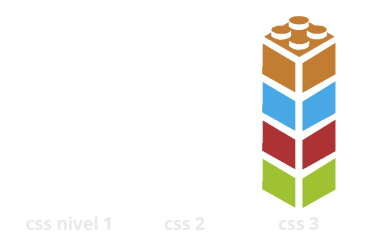

Contenido a modificar.

Curso de CSS3
{ El amigable mundo de la hojas de estilo }
En el capitulo anterior...
Nace CSS
fuuuusión
Un cambio en la web
Evolución
menos y menos Flash
la tag < link >
Formas de agregar hojas de estilo
Anatomía de la Tag Link
rel="stylesheet"
Describe el tipo de relación que tiene el archivo vinculado a nuestro documento HTML.
Anatomía de la Tag Link
type="text/css"
Define el tipo de archivo.
Anatomía de la Tag Link
href="nombredelachivo.css"
Declara la url con la dirección de donde deberá llamar al archivo y el nombres de este.
Anatomía de la Tag Link
media="all"
Define el dispositivo en el cual se ejecutara dicho documento de estilo.
Y existen varios tipos de media...
CSS Media Types
media="all"
Aplica a todos los tipos dispositivos.
CSS Media Types
media="screen"
Aplica a las pantallas de computadoras.
CSS Media Types
media="print"
Para dispositivos de impresión.
CSS Media Types
media="braille"
Se utiliza para los dispositivos de retroalimentación táctil Braille
CSS Media Types
media="embossed"
Se utiliza para las impresoras braille
CSS Media Types
media="projection"
Para proyección de presentaciones, como esta por ejemplo.
CSS Media Types
media="tv"
Para dispositivos del tipo televisión.
combinando Media Types
Hojas de estilo alternativas
web accesible
Reglas de CSS
Una regla CSS es una "orden" escrita que se le da a un elemento HTML para que se comporte de una manera determinada.
body{ background-color: #ff0000;}
una regla se forma: selector + declaración
Bloque de Declaraciones en CSS
{propiedad: valor;}
Son propiedades y valores que modifican el aspecto visual de uno o varios elementos.
Ejemplo de un Declaración
{background:#ff0000;}
Propiedada: característica que modifica el elemento seleccionado.
Valor: establece el nuevo valor de la propiedad modificada.
Los Selectores
El selector es un elemento HTML, que será modificado por la declaración que le asignemos.
Y también hay varios...
Selector de tipo etiqueta
Selecciona todos los elementos de la página cuya etiqueta HTML coincide con el valor del selector.
h1 {
color: red;
}
h2 {
color: blue;
}
p {
color: black;
}
escribamos un poco...
Selector descendente
Selecciona los elementos que se encuentran dentro de otros elementos.
Si la estructura de nuestro documento HTML es el siguiente:
texto de parrafo 1
texto con enlace
Si deseamos cambiar el color de la primera linea de texto, nuestra selector deberá quedar de la siguiente manera:
p span { color: red; }
Selectores de ID
Se utiliza el "id" del selector precediendo el nombre del "id" por un signo " # ".
Otro contenido.
Si deseamos modificar el contenido de el primer div, el código será el siguiente:
#main-content {
width: 400px;
background-color: red;
color: #fff;
}
Selectores de Clase
Se utiliza para especificar un estilo para un grupo de elementos con el mismo nombre en su clase.
El selector de clase utiliza el atributo de clase HTML, y se define con un " ."
ERROR 404
página no encontrada
lo sentimos la página que buscas, se la comió el perro.
Si deseamos modificar el título y el primer párrafo, lo hacemos mediante la clase:
#main-content {
width: auto;
color: #000;
}
.warning{
color: #ff0000;
}
recarguen el documento y...
Espera, espera ¿y los acentos?
no problem... solo agrega esta tag dentro del < head> de tu HTML
clases y id's
una clase = algo así como el apellido de nuestro elemento.
un id = como el número de IFE.
Selectores Descendentes o Contextuales
Permiten agregar estilo a un elemento descendientes de un primero.
Para ello agregaremos una lista en nuestro HTML.
ERROR 404
página no encontrada
lo sentimos la página que buscas, se la comio el perro.
- Revise que la dirección web este correcta.
- Recargue la página y haga changuitos.
- Regresar al index y revisar opciones.
Agregando estilo a nuestra lista:
#main-content {
width: auto;
color: #000;
}
.warning{
color: #ff0000;
}
ul{
background-color: #efefef;
padding: 10px;
margin: 10px auto;
width: 80%;
}
ul li{
color: #4e4e4e;
}
Selectores de hijos o Child selectors
Son similares a los selectores de descendentes, pero solo seleccionan a los hijos directos del elemento.
Se indican con un signo mayor que" >"
Agregaremos una sub-lista dentro de nuestra lista principal
ERROR 404
página no encontrada
lo sentimos la página que buscas, se la comio el perro.
- Revise que la dirección web este correcta.
- Quizá haya tenido un error de dedo
- Verifique no existan espacios en blanco en la url
- Recargue la página y haga changuitos.
- Regresar al index y revisar opciones.
Veamos que paso...
Agregamos estilo solo a los hijos directos:
#main-content {
width: auto;
color: #000;
}
.warning{
color: #ff0000;
}
ul{
background-color: #efefef;
padding: 10px;
margin: 10px auto;
width: 80%;
}
ol > li {
color: #4e4e4e;
}
Selector adyacente
Se emplea para seleccionar elementos que son hermanos (su elemento padre es el mismo) y están seguidos en el código HTML
Se indican con un signo adición " + "
Le agregaremos "negritas" al 2° párrafo, del código que ya tenemos.
#main-content {
width: auto;
color: #000;
}
.warning{
color: #ff0000;
}
#main-content p + p {
font-weight: bold;
}
ul{
background-color: #efefef;
padding: 10px;
margin: 10px auto;
width: 80%;
}
ul > li {
color: #4e4e4e;
}
Y... ¿que pasa si agregamos otro párrafo?
ERROR 404
página no encontrada
lo sentimos la página que buscas, se la comio el perro.
Por favor, prueba una de estas opciones:
Y... ¿si solo queremos que el ultimo párrafo este en "negritas"?
Solo modificamos ligeramente el selector...
#main-content p + p + p{
font-weight: bold;
}
y ¡listo!
Selector General de hermanos
Se emplea para seleccionar elementos hermanos (su elemento padre es el mismo) y NO están seguidos en el código HTML
Para este ejemplo agregaremos un párrafo después de la lista.
- Revise que la dirección web este correcta.
- Quizá haya tenido un error de dedo
- Verifique no existan espacios en blanco en la url
- Recargue la página y haga changuitos.
- Regresar al index y revisar opciones.
Lo sentimos. Vuelva pronto
Modificaremos ese párrafo con la siguiente regla:
div ~ p {
font-weight: bold;
text-decoration: underline;
}
Diferencia entre + y ~
A + B = el elemento B debe estar inmediatamente después del elemento A en el HTML
A ~ B = el elemento B debe estar después del elemento A en el HTML
Las Pseudo-Clases
Se utilizan para añadir atributos especiales a algunos selectores.
:first-childSelecciona el primer elemento hijo de un elemento.
:last-childSelecciona el ultimo elemento hijo de un elemento.
:link Selecciona todos los links sin visitar en el sitio.
:visitedSelecciona los links ya visitados.
:activeSelecciona los links activos.
:focusSe activa cuando el elemento esta seleccionado.
Practiquemos...
:first-child
Seleccionaremos el primer párrafo dentro del #main-content y lo pondremos en mayúsculas.
Primero añadiremos un div que encierre a nuestros elementos párrafo
ERROR 404
página no encontrada
lo sentimos la página que buscas, se la comio el perro.
Por favor, prueba una de estas opciones:
Luego añadimos esta regla a nuestro archivo css.
div p:first-child {
text-transform: uppercase;
}
:last-child
Seleccionaremos la ultima opción de nuestra lista y cambiaremos el color de texto a rojo
ul li:last-child {
color: red;
}
mmm... ¿y si solo quiero en rojo el ultimo "li" de la lista principal?
Hacemos uso del child-selector " > "
ul > li:last-child {
color: red;
}
Celector + Pseudo-clase
:link
Primero agregaremos un link al código, en nuestra lista:
- Revise que la dirección web este correcta.
- Quiza haya tenido un error de dedo
- Verifique no existan espacios en blanco en la url
- Recargue la página y haga changuitos.
- Regresar al index y revisar opciones.
Agregamos la siguiente regla de css:
a:link{
color: #922a2a;
}
:visited
Agregamos la siguiente regla css:
a:visited{
color: green;
}
:active
Agregamos la siguiente regla css:
a:active{
color: blue;
background: white;
}
:hover
Definimos el comportamiento cuando el cursor pase sobre el elemento:
a:hover{
color: white;
text-decoration: none;
font-weight: bold;
background: red;
}
:focus
Primero añadiremos un < header> a nuestro HTML y un "serch-box" dentro.
Este código lo agregaremos inmediatamente arriba del div #main-content.
con esto aparecerá una caja de búsqueda en la parte superior de nuestro documento HTML
Ahora agregamos la siguiente regla css:
input:focus
{
background-color: magenta;
}
Pseudo-elementos
Se utilizan para añadir comportamiento especial a un selector.
:first-letterSelecciona la primera letra de un texto.
:first-lineSelecciona la primera línea de un párrafo.
:before Inserta contenido antes del elemento referido.
:afterInserta contenido después del elemento referido.
Practiquemos...
:first-letter
Seleccionaremos la primera letra de cada párrafo y la pondremos en mayúscula.
p:first-letter
{
text-transform: uppercase;
}
:first-line
Agregamos una línea más de texto a nuestro primer párrafo:
ERROR 404
página no encontrada.
Esta es la segunda línea de texto.
lo sentimos la página que buscas, se la comio el perro.
Por favor, prueba una de estas opciones:
Ahora agregamos la siguiente regla css:
p:first-line
{
font-weight: bold;
font-family: arial;
}
:after
Agregamos un texto breve adelante de los "li" secundarios
ol li:after
{
content:"-Suele pasar-";
font-style: italic;
}
:before
Pondremos un "Ups!" antes del h1
h1:before
{
content:"Ups!";
text-transform: uppercase;
margin-right: 10px;
}
Otros Pseudo-elementos de CSS3
Úsense con precaución:
:only-childSelecciona el elemento único dentro de su padre.
:nth-child(#)Selecciona el elemento que coincida con el número asignado dentro de los paréntesis .
::selectionAfecta la selección hecha por el usuario con el mouse.
:only-child
Pondremos un < div> más al final del nuestro documento.
Si necesita atención de nuestro sistema de soporte presione aquí.
Agregamos estas línas en nuestro .css:
div p:only-child {
font-style: italic;
}
:nth-child(#)
modificaremos el segundo elemento de nuestra lista principal:
ul > li:nth-child(2){
border-bottom: 1px dashed red;
}
::selection
Modificaremos el estilo de selección sobre los párrafos
p::selection{
background-color: #000;
color: #fff;
}
El problema de selección de texto, en que no se puede seleccionar la primera letra del párrafo, únicamente ocurre en chrome, y ocurre por conflictos con la propiedad -text-transform: uppercase;- que agregamos antes.
mmm... en Firefox no funciona :S
p::-moz-selection {
background-color: #000;
color: #fff;
}
Esta propiedad NO puede agruparse con p::selection, amabas deben escribirse por separado para tener efecto.
combinado pseudo-atributos
Podemos mezclar pseudo clases y pseudo elementos para afectar de forma aislada un elemento.
Modificaremos la regla css:
div p:first-line
{
font-weight: bold;
font-family: arial;
}
Para que solo afecte al primer párrafo y no a todos.
"tunearemos" el selector para volverlo más especifico:
div p:first-child:first-line{
font-weight: bold;
font-family: arial;
}
Para que solo afecte al primer párrafo y no a todos.
Agrupando Selectores
En ocasiones tenemos selectores que tienen cada uno declaraciones idénticas:
header{
background: red;
min-height: 40px;
}
footer{
background: red;
min-height: 40px;
}
mmmm... ¿alguien ve el footer?
Pongamos el footer!
Agregamos la etiqueta footer antes del cierre del < body>
Ahora agrupemos los selectores de la siguiente manera:
header,
footer{
background: red;
min-height: 40px;
}